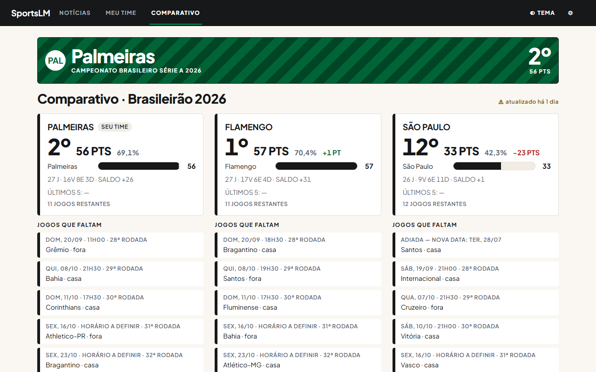
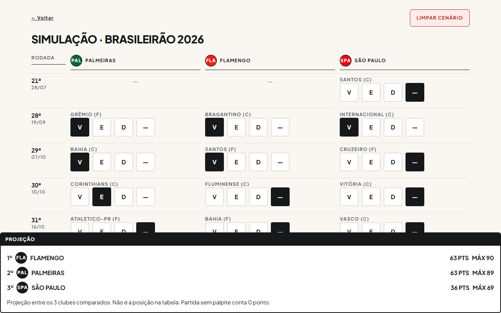
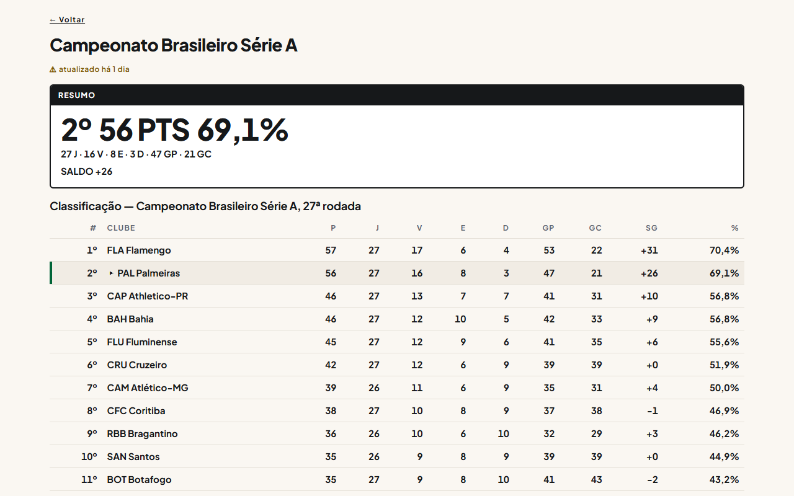
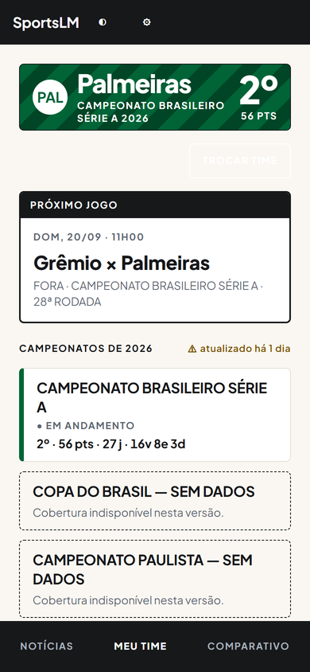

Notícias e painel juntos
Notícias esportivas das principais fontes e o painel do seu time de futebol na mesma tela.
App web gratuito, sem conta
Reúne notícias esportivas das principais fontes e o painel do seu time de futebol: classificação, próximos jogos, comparação com até 2 rivais e simulação de cenários do Brasileirão Série A.

Por que usar
Notícias esportivas das principais fontes e o painel do seu time de futebol na mesma tela.
Suas escolhas ficam só no seu navegador. O onboarding tem 2 passos, pode ser pulado e permite escolher até 3 esportes e o time do coração.
As cores seguem o clube, há tema claro e escuro, uso só com teclado e layout responsivo em computador, tablet e celular.
Por dentro
Escolha vitória, empate ou derrota para os jogos que faltam e veja a projeção de pontos do Brasileirão Série A.

Acompanhe a tabela do Campeonato Brasileiro Série A com o resumo do seu time em destaque.

Meu time mostra o próximo jogo e os campeonatos de 2026 em um layout pensado para a tela pequena.

Duvidas
Não. Tudo funciona no navegador, sem conta e sem login; suas escolhas ficam só nele.
As escolhas não sincronizam entre aparelhos ou navegadores. Basta refazer o onboarding no novo lugar.
Os dados são atualizados periodicamente. O ícone ⚠ indica que o dado está mais antigo que o normal.
Em Meu time, use o botão Trocar time.
Sim. Use Tab e Shift+Tab para navegar, Enter ou Espaço para ativar e Esc para fechar.
A notícia abre no site da fonte. Verifique sua conexão; a fonte também pode estar fora do ar.
Novidades
Gratuito, sem conta, direto no navegador do computador, tablet ou celular.
Abrir app (abre em nova aba)